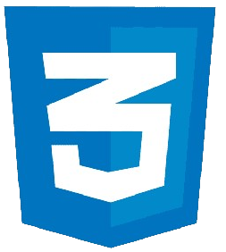
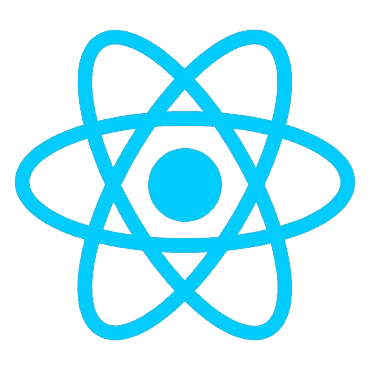

Cursos
Home
Cursos
Matrícula
Cursos Disponíveis:
HTML
CSS
Javascript
React
NodeJS
HTML (Linguagem de Marcação de HiperTexto) é o bloco de construção mais básico da web. Define o significado e a estrutura do conteúdo da web.
Fechar

Cascading Style Sheets é um mecanismo para adicionar estilos a uma página web, aplicado diretamente nas tags HTML ou ficar contido dentro das tags,Também é possível, adicionar estilos adicionando um link para um arquivo CSS que contém os estilos.
Fechar
JavaScript é uma linguagem de programação interpretada estruturada, de script em alto nível com tipagem dinâmica fraca e multiparadigma. Juntamente com HTML e CSS, o JavaScript é uma das três principais tecnologias da World Wide Web.
Fechar

O React é uma biblioteca front-end JavaScript de código aberto com foco em criar interfaces de usuário em páginas web.
Fechar
Node.js é um software de código aberto, multiplataforma, baseado no interpretador V8 do Google e que permite a execução de códigos JavaScript fora de um navegador web. A principal característica do Node.js é sua arquitetura assíncrona e orientada por eventos.
Fechar